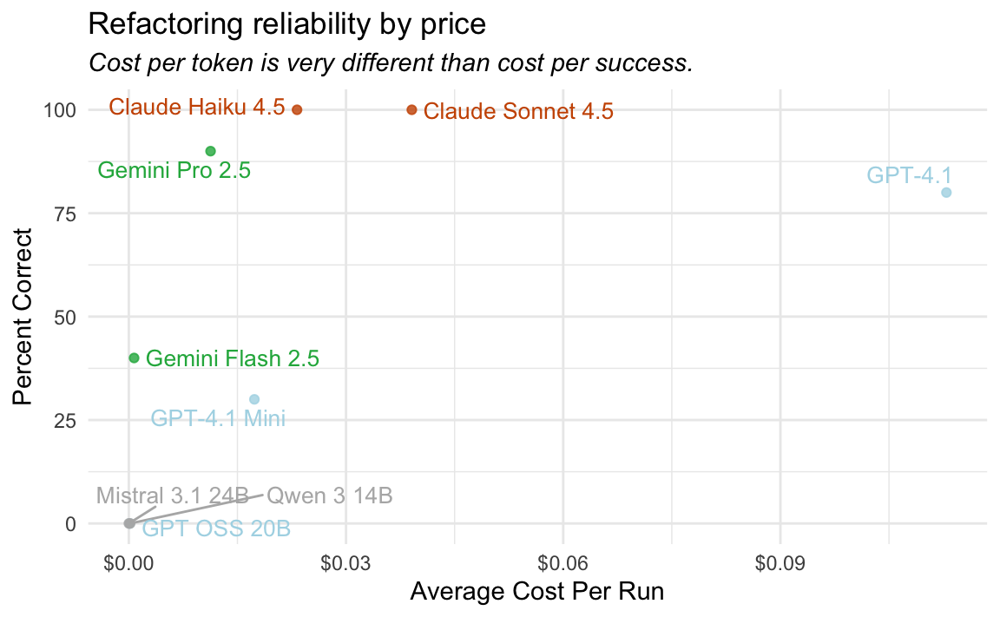

I understand the appeal of local models. Using coding agents like Claude Code or Codex, it’s not difficult to rack up a hundred dollars of usage in the course of a work week. Besides the price, if you’re working with sensitive IP or confidential data, you need to really believe that providers like Anthropic and OpenAI can be trusted with your data. And then, there’s evil billionaires. What if you could run models that were nearly as good on your own laptop?
Because of this, one of the most commonly asked questions we get about coding agents like Positron Assistant or side::kick() is whether they can be used with local models. (For the purposes of this post, when I say “local model”, I mean an LLM that can be served on a high-end laptop with decent tokens per second. Think GPT-OSS 20B.) The answer is yes, but also that we don’t recommend doing so; while you can connect to a local model through an OpenAI API-compatible endpoint with either of those systems, you likely won’t have a good experience if you do so.
This is an argument I’ve tried to make in a paragraph or two many times, but I thought it would be worth fleshing out in more detail. To do so, I put together an LLM evaluation that demonstrate the issues we’ve seen when trying to get these models working.
The problem
Let’s consider a table-stakes capability for a coding agent; a simple refactor. Here, when I say “coding agent,” a mean an LLM that’s equipped with tools to explore and make changes to your working directory. That could be Claude Code, Codex, Positron Assistant, or side::kick().
So, say I have some file tool-fetch_skill.R pulled up that looks like this:
fetch_skill_impl <- function(skill_name, `_intent` = NULL) { skill_path <- find_skill(skill_name) if (is.null(skill_path)) { available <- list_available_skills() skill_names <- vapply(available, function(x) x$name, character(1)) cli::cli_abort( c( "Skill {.val {skill_name}} not found.", "i" = "Available skills: {.val {skill_names}}" ), call = rlang::caller_env() ) } skill_content <- readLines(skill_path, warn = FALSE) # Remove YAML frontmatter if present content_start <- 1 if (length(skill_content) > 0 && skill_content[1] == "---") { yaml_end <- which(skill_content == "---") if (length(yaml_end) >= 2) { content_start <- yaml_end[2] + 1 } } skill_text <- paste( skill_content[content_start:length(skill_content)], collapse = "\n" ) # ...
I might provide a prompt like the following:
Refactor this code from my project into a helper:
At this point, the coding agent needs to do a few things:
- Find which file in the project those lines are from by using a text search tool, probably for “Remove YAML frontmatter” or a different snippet of code.
- Read the file that it discovers.
- Apply edits to the file, first by adding a helper function (probably to the end of the file or to a new file in the directory) and then second by replacing the original usage with a call to the helper.
In practice, that might look something like this:
In case this interface is unfamiliar, this is the RStudio IDE running an open source coding agent side::kick().
This is something that a coding agent should get perfect almost always; my initial prompt is a bit more detailed than I’d usually provide for such a simple task, there’s no context rot that could affect the agent’s effectiveness, and the task is a simple one.
Evaluation
Using the vitals package, I implemented an LLM evaluation where various models are tasked with that refactor multiple times. You can install it with pak::pak("simonpcouch/helperbench").
For a given run, the setup goes like this:
- The side::kick() GitHub repository is copied into a temporary directory.
- An ellmer chat is provided with the side::kick() prompt and tools that tell it to basically act like a Claude Code- or Codex-flavored agent and situated in that directory.
- The agent is provided with the user prompt shown above (“Can you refactor this…”) and allowed to work until completion.
- Once the agent finishes,
- The eval checks whether the agent actually made any edits to (at least) the relevant file. If it didn’t, that run is a failure.
- Then, the contents of the resulting
R/directory is copied in place of theR/directory in another ephemeral copy of the side::kick() GitHub repository, and the package unit tests run. If the unit tests pass, the run is a pass, otherwise it’s a failure.
For each of 9 models, I ran the eval 10 times. The results are combined in this data frame:
# A tibble: 10 × 6
model score type cost input output
<chr> <ord> <chr> <dbl> <dbl> <dbl>
1 Qwen 3 14B I Local 0.00143 2916 5006
2 Gemini Pro 2.5 C Frontier 0.152 42801 9888
3 GPT OSS 20B I Local 0.000277 8811 87
4 GPT-4.1 C Frontier 1.48 720546 4372
5 Claude Haiku 4.5 C Budget 0.327 305204 4399
6 Gemini Pro 2.5 C Frontier 0.0932 16030 7320
7 Claude Haiku 4.5 C Budget 0.102 95380 1290
8 Mistral 3.1 24B I Local 0.0000153 1 139
9 GPT-4.1 C Frontier 0.745 364150 2138
10 Mistral 3.1 24B I Local 0.000143 4054 192Each row is a given run, where score == "C" means the run succeeded.
Performance by model
We can first plot the proportion of runs that succeeded by model:
helper_results %>%
mutate(
correct = score == "C",
lab = case_when(
model %in% c("Claude Haiku 4.5", "Claude Sonnet 4.5") ~ "Anthropic",
model %in% c("GPT-4.1 Mini", "GPT-4.1", "GPT OSS 20B") ~ "OpenAI",
model %in% c("Gemini Flash 2.5", "Gemini Pro 2.5") ~ "Google",
TRUE ~ "Other"
),
color = case_when(
lab == "Anthropic" ~ "#CC5500",
lab == "OpenAI" ~ "#ADD8E6",
lab == "Google" ~ "#22B14C",
TRUE ~ "#CCCCCC"
)
) %>%
group_by(model, type, lab, color) %>%
summarise(pct_correct = mean(correct) * 100, .groups = "drop") %>%
mutate(pct_correct = pmax(pct_correct, .5)) %>%
arrange(type, pct_correct) %>%
mutate(
type = factor(type, levels = c("Frontier", "Budget", "Local")),
model = fct_inorder(model)
) %>%
ggplot(aes(x = model, y = pct_correct, fill = color)) +
geom_col() +
scale_fill_identity() +
scale_y_continuous(n.breaks = 10, minor_breaks = NULL) +
facet_wrap(~type, nrow = 3, dir = "v", scales = "free_y") +
coord_flip() +
labs(
y = "Percent Correct",
x = NULL,
title = "Agentic Coding Reliability",
subtitle = "When choosing models to power coding tools, you get what you pay for."
) +
theme(
legend.position = "none",
plot.title = element_text(hjust = -0.343),
plot.subtitle = element_text(hjust = 10, face = "italic"),
axis.text.y = element_text(angle = 15, hjust = 1)
)![Performance of various AI models across three categories: Frontier (closed-source commercial models), Budget (smaller commercial models), and Local (open-source models that can run locally). In the Frontier category, Claude Sonnet 4.5 achieves the highest accuracy at approximately 95%, followed by Gemini Pro 2.5 at around 85% and GPT-4.1 at roughly 82%. The Budget and Local categories show significantly lower performance, with Claude Haiku 4.5 leading Budget models at about 95% accuracy, while the local open-source models (Qwen Coder, Mistral, and GPT OSS) all score near 0% correct.](index_files/figure-html/plot-accuracy-1.png)
The models labeled “Frontier” are models that I would actually use as a daily-driver coding assistant in an application like Positron Assistant or side::kick(), one from each of the big three labs. The models labeled “Budget” are “one step below” from each of the big three AI labs, but do note that there are some significant price differences within that band. These are models that I might temporarily switch to when speed is a priority and I feel confident the quality won’t be an issue. Finally, the models marked “Local” are models that are small enough that I could run them at a reasonable tokens per second on my laptop. To make sure the playing field was otherwise as level as possible, I used chat_openrouter() rather than each of the labs’ APIs directly. In practice, I’d usually prefer to use the labs’ APIs directly and the local models… locally.
The graph shows that the frontier models complete the refactor successfully almost always. The budget models are spotty. Never once did a model I could run on my laptop complete the refactor successfully.
There are a couple notable model omissions here.
- I had trouble getting Gemini 3 Pro working with ellmer through OpenRouter and didn’t bother to debug.
- I use GPT 4.1 rather than 5, 5.1, or any of the Codex variants of the GPT family.
side::kick()has “built-in” thinking and is this most pleasant with non-thinking models; OpenAI (currently, as of December 2025) describes GPT 4.1 as their “smartest non-reasoning model.”
On the Local side:
- Gemma 3 27B was one of my first thoughts, but OpenRouter doesn’t support tool calling with that model.
- I also had initially ran this against Qwen 3 Coder 30B, and it did surprisingly well (7/10!), but then I realized it’s too large to run on my M4 Macbook Pro with 48GB memory unless quantized aggressively, which ruins the performance.
Surprisingly, the failure modes for each of the local models tested here are pretty consistent within-model:
- Mistral 3.1 24B just (correctly) writes out the steps to make the refactor without calling the needed tools to make it happen.
- GPT OSS 20B attempts to call a few tools and struggles to get the argument formats right before giving up.
- Qwen 3 14B tends to declare success too early, writing the helper function correctly but not incorporating it back into the original function.
You can explore the logs from each of these runs in more detail in the log viewer:
Factoring in cost
Again, my categorizations of models here aren’t a given. Within those categories, there are pretty substantial differences in the average cost per run:
helper_results %>%
mutate(
correct = score == "C",
lab = case_when(
model %in% c("Claude Haiku 4.5", "Claude Sonnet 4.5") ~ "Anthropic",
model %in% c("GPT-4.1 Mini", "GPT-4.1", "GPT OSS 20B") ~ "OpenAI",
model %in% c("Gemini Flash 2.5", "Gemini Pro 2.5") ~ "Google",
TRUE ~ "Other"
),
color = case_when(
lab == "Anthropic" ~ "#CC5500",
lab == "OpenAI" ~ "#ADD8E6",
lab == "Google" ~ "#22B14C",
TRUE ~ "#b4b4b4ff"
),
color = factor(color, levels = c("#CC5500", "#22B14C", "#ADD8E6", "#b4b4b4ff"))
) %>%
group_by(model, type, lab, color) %>%
summarise(avg_cost = mean(cost / n(), na.rm = TRUE), .groups = "drop") %>%
mutate(avg_cost = pmax(avg_cost, .001)) %>%
arrange(type, desc(color), avg_cost) %>%
mutate(
type = factor(type, levels = c("Frontier", "Budget", "Local")),
model = fct_inorder(model)
) %>%
ggplot(aes(x = model, y = avg_cost, fill = color)) +
geom_col() +
scale_fill_identity() +
scale_y_continuous(labels = scales::dollar_format()) +
facet_wrap(~type, nrow = 3, dir = "v", scales = "free_y") +
coord_flip() +
labs(y = "Average Cost Per Run", x = NULL) +
theme(legend.position = "none")
The bar heights represent the average cost per refactor. So, it costed about 4 cents for Claude Sonnet 4.5 to “read” the side::kick() prompt and tool descriptions, call tools to check out its surroundings, and apply the edits once. Altogether, this eval costed me about $22 to run.
Since we have a proxy for performance and the cost, we might as well do the performance vs. cost plot:
helper_results %>%
mutate(
correct = score == "C",
lab = case_when(
model %in% c("Claude Haiku 4.5", "Claude Sonnet 4.5") ~ "Anthropic",
model %in% c("GPT-4.1 Mini", "GPT-4.1", "GPT OSS 20B") ~ "OpenAI",
model %in% c("Gemini Flash 2.5", "Gemini Pro 2.5") ~ "Google",
TRUE ~ "Other"
),
color = case_when(
lab == "Anthropic" ~ "#CC5500",
lab == "OpenAI" ~ "#ADD8E6",
lab == "Google" ~ "#22B14C",
TRUE ~ "#b4b4b4ff"
)
) %>%
group_by(model, type, lab, color) %>%
summarise(
pct_correct = mean(correct) * 100,
avg_cost = mean(cost / n(), na.rm = TRUE),
.groups = "drop"
) %>%
mutate(
type = factor(type, levels = c("Frontier", "Budget", "Local"))
) %>%
ggplot(aes(x = avg_cost, y = pct_correct, color = color)) +
geom_point(alpha = 0.8) +
geom_text_repel(aes(label = model), size = 3.5, show.legend = FALSE) +
scale_color_identity() +
scale_x_continuous(labels = scales::dollar_format()) +
scale_size_identity() +
labs(
x = "Average Cost Per Run",
y = "Percent Correct"
) +
theme(
legend.position = "none"
)
Conclusion
I don’t really enjoy telling folks that they ought not to use local models. Again, the advantages are clear; free (as in, the cost of electricity to charge your laptop), perfect privacy, no mega-corporations involved. In the medium run (1-2 years?), I’d love for it to be the case that you can run a Claude Sonnet 4-ish model on a base Macbook Pro, and I think that’s a plausible future. For now, though, if you’d like to get value out of coding agents, you’ll need to opt for the most capable models out there.